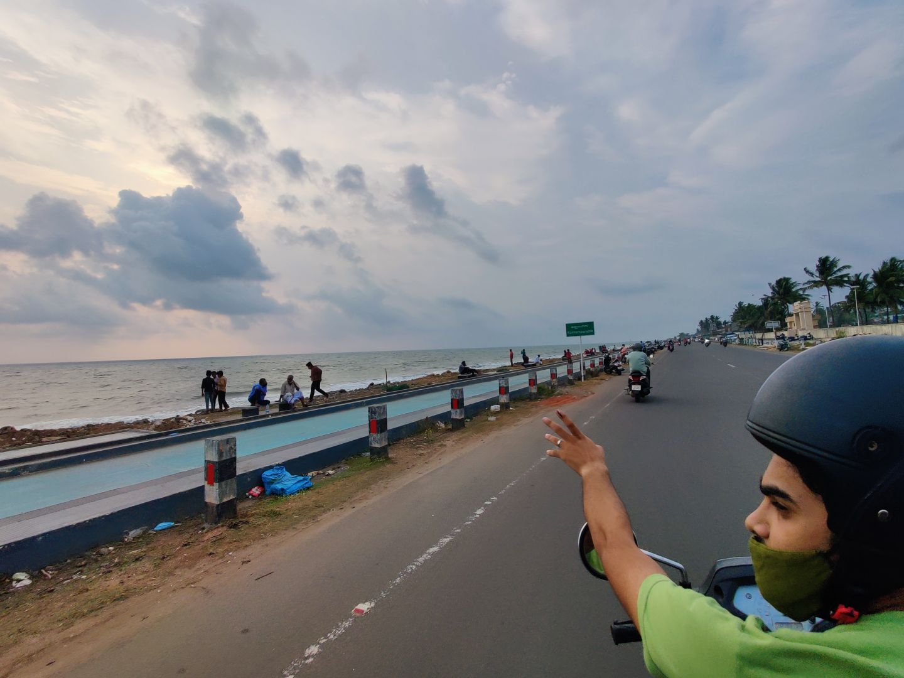

What is photo editing?
The meaning of photo editing is the act of altering an image, simply put. But that’s oversimplifying a subject which is quite complex. For example, some photo editing techniques are done manually, while others are conducted through automated software. Some photo editing is even done offline, on actual photographs, posters or other printed collateral.
- Terms for photo editing:
- Image editing
- Post-processing
- Image/photo manipulation
- Photoshopping
- Image/photo enhancement
HERE ARE SOME SAMPLES
Before

After
Before
After
Before

After
Before
After